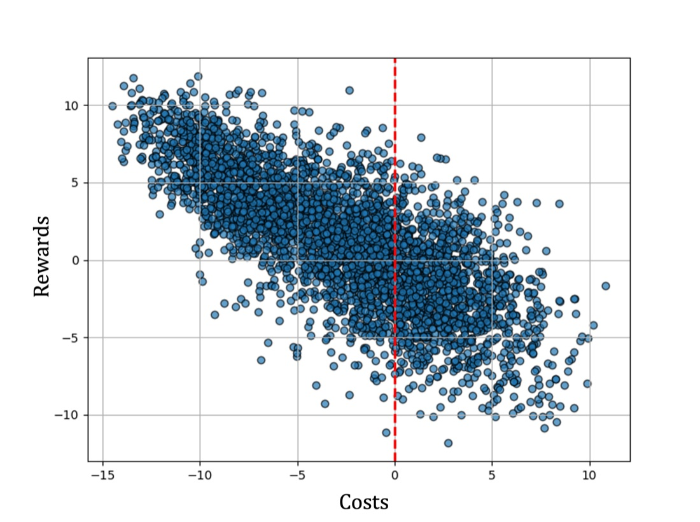
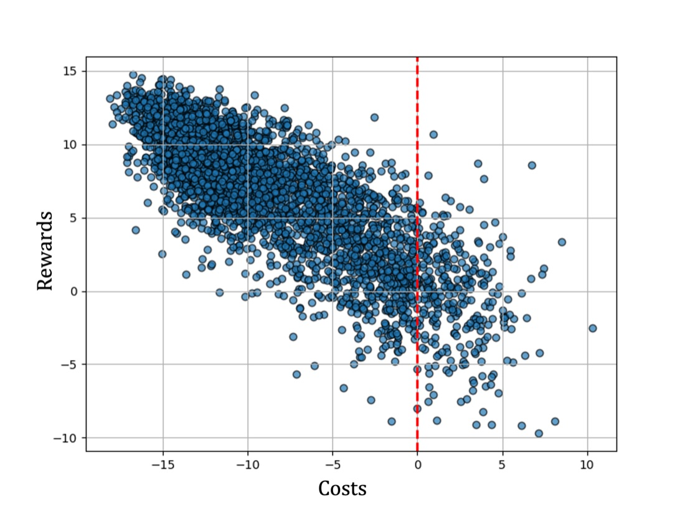
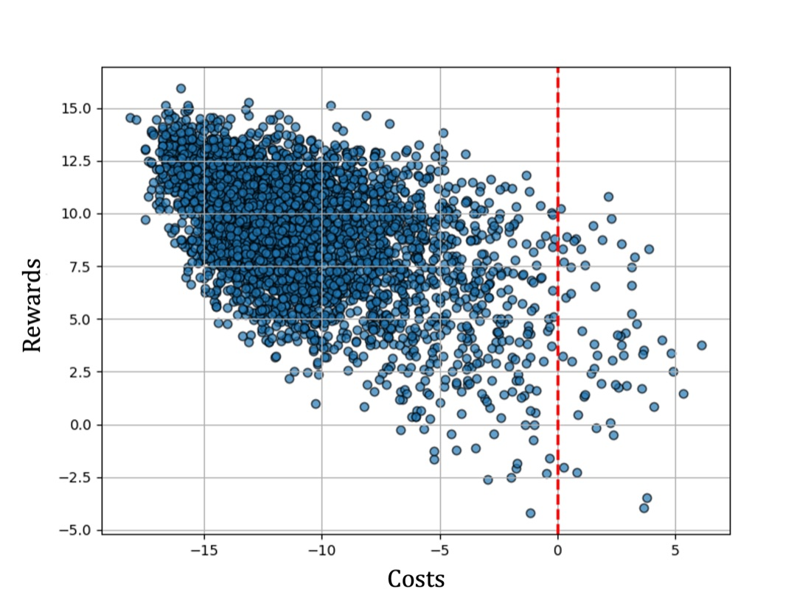
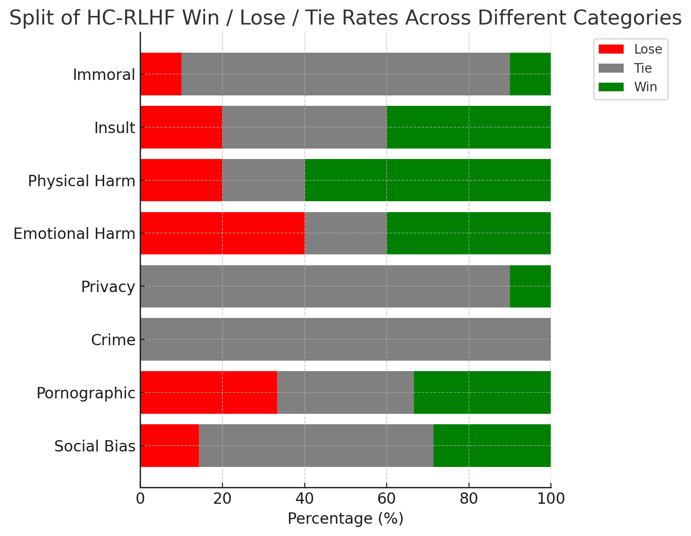

Safe with high probability, not just on the training prompts. HC-RLHF maximizes helpfulness under a deliberately pessimistic harmlessness constraint, then runs a held-out statistical safety test. A model is returned only if it passes, so the chance of shipping an unsafe model is at most \(\K{\delta}\).
The problem
Safe RLHF separates helpfulness from harmlessness and maximizes a reward model subject to a limit on a cost model. That gives much better control over the trade-off than standard RLHF. But the constraint is only enforced on the prompts seen during training, and nothing bounds the probability that the final model is unsafe once it is deployed. In medical, legal or educational settings, that probability is exactly what matters.
Existing approaches to language model alignment often treat safety as a tradeoff against helpfulness, which can lead to unacceptable responses in sensitive domains. To ensure reliable performance in such settings, we propose High-Confidence Safe Reinforcement Learning from Human Feedback (HC-RLHF), a method that provides high-confidence safety guarantees while maximizing helpfulness. Similar to previous methods, HC-RLHF explicitly decouples human preferences regarding helpfulness and harmlessness (safety) and trains separate reward and cost models, respectively. It then employs a two-step process to find safe solutions. In the first step, it optimizes the reward function while ensuring that a specific upper-confidence bound on the cost constraint is satisfied. In the second step, the trained model undergoes a safety test to verify whether its performance satisfies a separate upper-confidence bound on the cost constraint. We provide a theoretical analysis of HC-RLHF, including a proof that it will not return an unsafe solution with a probability greater than a user-specified threshold. For our empirical analysis, we apply HC-RLHF to align three different language models (Qwen2-1.5B, Qwen2.5-3B, and LLaMa3.2-3B) with human preferences. Our results demonstrate that HC-RLHF produces safe models with high probability while also improving helpfulness and harmlessness compared to previous methods.
The constraint holds on average over training prompts. Whether it still holds on new prompts depends on the dataset, the threshold and luck, and there is no way to know in advance.
Train against an upper confidence bound on cost, not the mean, then verify on data the optimizer never saw. The guarantee comes from the Seldonian framework.
How it works
HC-RLHF is the first Seldonian algorithm applied to RLHF. It uses the same decoupled preference data as Safe RLHF: a reward model \(\R{r_\phi}\) is trained on helpfulness labels and a cost model \(\C{C_\psi}\) on harmfulness labels, both with the standard Bradley–Terry loss. What changes is how the policy is optimized and what happens before it is returned.
Split the prompts into a candidate-selection set used for training and a safety set held out for the final test.
Maximize reward under the inflated cost bound, using Lagrangian dual ascent. Inflating the bound accounts for the many models compared during optimization, and makes it more likely that the candidate will pass the test.
Score the candidate's responses on the held-out prompts with the cost model and compute a (1 − δ) upper confidence bound on its expected cost.
Result 1 · Harmfulness
Each point is one test-set response, scored by the trained reward and cost models. Responses to the right of the dashed line (cost above \(\tau = 0\)) are judged harmful. All three models share the same reward and cost models; the only difference is the safety constraint used during RL.



Result 2 · Helpfulness
For each test prompt we compare the HC-RLHF and Safe RLHF responses, bucket the pair by whether each response is safe, and count how often HC-RLHF earns the higher reward.
Cells show the HC-RLHF reward win rate and, in parentheses, the number of prompt pairs in that bucket.
Result 3 · GPT-4 as judge
To check that the gains are not an artifact of our own reward and cost models, GPT-4 compared responses pairwise for Llama-3.2-3B. "Overall" uses the categorized red-teaming prompts from the Safe RLHF repository. Helpfulness and harmlessness use 100 unseen test prompts.

Result 4 · The guarantee in practice
To test the guarantee empirically, we repeatedly ran HC-RLHF on Qwen2-1.5B (the smallest model, so many trials were affordable) and checked each returned model against a large held-out dataset.
At most 10% of runs may return an unsafe model, at τ = 0.
Bootstrap-resampled training sets of 1,000 prompts each.
Every candidate passed the safety test, and every returned model was safe.
Lower τ means a stricter harm budget. Both methods trained on 72,000 prompts with 4,000 held out, Llama-3.2-3B, one trial per threshold.
A single trial per threshold cannot estimate Safe RLHF's failure rate. The point is that Safe RLHF has no guarantee, so there is no way to tell in advance which thresholds or dataset sizes it will handle. HC-RLHF's guarantee holds regardless.
Citation
@article{chittepu2025reinforcement,
title = {Reinforcement Learning from Human Feedback with High-Confidence Safety Guarantees},
author = {Chittepu, Yaswanth and Metevier, Blossom and Schwarzer, Will and Hoag, Austin and Niekum, Scott and Thomas, Philip S.},
journal = {Reinforcement Learning Journal},
volume = {6},
pages = {713--736},
year = {2025}
}